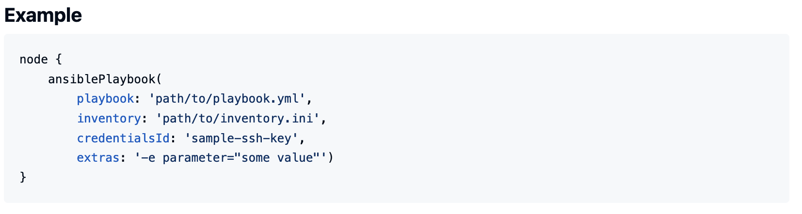
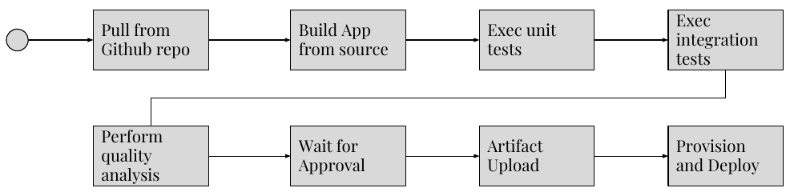

Partie 5 : Intégration d'Ansible dans un Pipeline CI/CD avec Jenkins et AWS
Objectifs
Dans cette partie, vous allez :
- Comprendre l’intégration d’Ansible dans un pipeline CI/CD avec Jenkins pour des déploiements automatisés.
- Créer un pipeline Jenkins qui exécute des playbooks Ansible pour provisionner une infrastructure AWS.
- Automatiser le déploiement d’une application et la gestion des artefacts dans un environnement cloud.
5.1 Introduction à l'Intégration CI/CD avec Jenkins et Ansible
Jenkins est un outil d’intégration et de déploiement continus (CI/CD) qui permet d'automatiser les tâches de construction, de test, et de déploiement d'applications. En intégrant Ansible dans Jenkins, il devient possible d’automatiser le déploiement sur AWS en exécutant des playbooks Ansible directement depuis le pipeline Jenkins.
Avantages de l’intégration d’Ansible dans un pipeline CI/CD
- Automatisation du déploiement : Les playbooks Ansible peuvent être exécutés automatiquement à chaque changement de code ou de configuration, garantissant un déploiement rapide et cohérent.
- Standardisation des configurations : Grâce à Ansible, les configurations d’infrastructure et d’applications peuvent être uniformisées, limitant les erreurs de déploiement.
- Gestion centralisée des artefacts : Jenkins permet de suivre et stocker les logs ou artefacts de déploiement, tandis qu’Ansible gère l’infrastructure sous forme de code.
5.2 Création d’un Pipeline Jenkins pour l’Automatisation Ansible
Écriture d’un Jenkinsfile pour orchestrer l'exécution de playbooks Ansible
Le Jenkinsfile définit le pipeline CI/CD de Jenkins. Pour intégrer Ansible, nous définissons des étapes pour exécuter les playbooks, comme le provisioning de serveurs ou le déploiement d’applications.
Exemple de Jenkinsfile pour exécuter un playbook Ansible :
pipeline {
agent any
stages {
stage('Provision Infrastructure') {
steps {
ansiblePlaybook inventory: 'hosts',
playbook: 'provision_infra.yml'
}
}
}
}
Exécution d’Ansible dans Jenkins avec le plugin Ansible
- Installation du plugin Ansible : Installez le plugin Ansible dans Jenkins pour exécuter des playbooks directement.
- Configuration des informations d’identification : Ajoutez les informations d’identification AWS dans Jenkins pour qu’il puisse accéder aux ressources cloud de manière sécurisée.
- Définition de l’inventaire : Spécifiez l’inventaire d’Ansible dans Jenkins pour exécuter les tâches sur les hôtes cibles.

Source: https://plugins.jenkins.io/ansible/
Exercice : Créer un job Jenkins pour exécuter un playbook Ansible qui provisionne une infrastructure de test sur AWS
- Créez un Jenkinsfile avec une étape pour exécuter un playbook Ansible nommé
provision_infra.yml. - Configurez Jenkins pour exécuter ce job avec le plugin Ansible, en spécifiant l’inventaire et les informations d’identification AWS.
5.3 Déploiement Automatisé d'une Application sur EC2 avec Ansible et Jenkins
Dans cette étape, nous allons mettre en place un pipeline complet pour déployer une application sur une instance EC2 en utilisant Ansible et Jenkins. Le pipeline inclura le provisioning d’instances EC2, le déploiement de l’application, et la sauvegarde des artefacts dans S3.
Mise en place d’un pipeline complet pour le déploiement d’une application
- Création et configuration des instances EC2 : Utilisez un playbook pour provisionner une ou plusieurs instances EC2 et configurer les paramètres de base.
- Déploiement de l’application et configuration de base : Ajoutez une étape pour installer l’application, configurer le serveur et les services nécessaires.
- Stockage des logs ou des artefacts dans S3 : Automatisez le transfert des artefacts générés (logs, fichiers de configuration) vers S3 pour archivage.
Exemple de Jenkinsfile pour un pipeline de déploiement avec Ansible :
pipeline {
agent any
stages {
stage('Provision EC2 Instances') {
steps {
ansiblePlaybook playbook: 'provision_ec2.yml'
}
}
stage('Deploy Application') {
steps {
ansiblePlaybook playbook: 'deploy_application.yml'
}
}
stage('Store Logs in S3') {
steps {
ansiblePlaybook playbook: 'upload_logs_s3.yml'
}
}
}
}

Source: https://www.redhat.com/en/blog/integrating-ansible-jenkins-cicd-process
Projet final : Créer un pipeline Jenkins avec Ansible pour provisionner des instances EC2, configurer l’application, et sauvegarder les logs dans S3
Objectif du projet : Automatiser l’ensemble du processus de déploiement d’une application sur AWS en intégrant Ansible dans un pipeline CI/CD Jenkins.
Étapes du projet :
-
Préparer les playbooks Ansible :
provision_ec2.yml: Provisionner une instance EC2 avec les paramètres nécessaires (type d’instance, sécurité, etc.).deploy_application.yml: Déployer l’application sur l’instance EC2, en installant les dépendances nécessaires.upload_logs_s3.yml: Sauvegarder les logs de déploiement dans un bucket S3.
-
Configurer le pipeline Jenkins :
- Créez un Jenkinsfile avec des étapes pour exécuter chaque playbook.
- Utilisez le plugin Ansible pour exécuter les playbooks dans chaque étape du pipeline.
-
Exécuter le pipeline et vérifier les résultats :
- Exécutez le pipeline dans Jenkins pour provisionner, déployer, et stocker les artefacts.
- Vérifiez que les logs sont correctement sauvegardés dans S3 et que l’application est accessible sur l’instance EC2.
Liens vers la Documentation
- Documentation officielle de Jenkins
- Documentation du plugin Ansible pour Jenkins
- Exemples de Jenkinsfile pour CI/CD
Questions de Révision
Questions de Révision
Pourquoi est-il avantageux d'intégrer Ansible dans un pipeline CI/CD Jenkins ?
Solution
L'intégration d'Ansible permet l'automatisation complète des déploiements, la standardisation des configurations, et facilite la gestion des ressources cloud de manière récurrente.Quel est le rôle du Jenkinsfile dans un pipeline Jenkins ?
Solution
Le Jenkinsfile définit les étapes du pipeline CI/CD, permettant d’orchestrer les différentes étapes de construction, test, et déploiement de manière codifiée.Comment Jenkins exécute-t-il des playbooks Ansible ?
Solution
Jenkins exécute des playbooks Ansible en utilisant le plugin Ansible, configuré avec les informations d’identification nécessaires et le fichier d’inventaire.Conseils Pratiques
- Utilisez des noms explicites pour chaque étape du pipeline dans le Jenkinsfile pour une meilleure lisibilité des logs.
- Stockez les informations d’identification de manière sécurisée dans Jenkins : utilisez les Credentials de Jenkins pour stocker les informations AWS nécessaires.
- Vérifiez l'intégration Ansible-Jenkins avec des tests de validation de configuration avant de déployer en production. Guide d'intégration Ansible et Jenkins
Défi Intermédiaire
Défi Intermédiaire
**Objectif** : Créer un pipeline CI/CD complet pour provisionner des instances EC2, déployer une application, et sauvegarder les logs dans S3.
Contexte : Vous devez configurer un pipeline Jenkins avec Ansible pour automatiser le déploiement d’une application. Les étapes incluront le provisioning d’instances EC2, l'installation de l'application, et le transfert des artefacts dans S3.
Étapes principales
1. Créez les playbooks nécessaires (`provision_ec2.yml`, `deploy_application.yml`, `upload_logs_s3.yml`). 2. Configurez un Jenkinsfile pour orchestrer ces playbooks en étapes. 3. Ajoutez les informations d’identification AWS dans Jenkins et testez le pipeline.Compétences renforcées :
- Intégration de Jenkins et Ansible pour des tâches d’automatisation
- Création d’un pipeline CI/CD complet
Solution suggérée
Utilisez un Jenkinsfile comme suit :pipeline {
agent any
stages {
stage('Provision EC2 Instances') {
steps {
ansiblePlaybook playbook: 'provision_ec2.yml'
}
}
stage('Deploy Application') {
steps {
ansiblePlaybook playbook: 'deploy_application.yml'
}
}
stage('Store Logs in S3') {
steps {
ansiblePlaybook playbook: 'upload_logs_s3.yml'
}
}
}
}